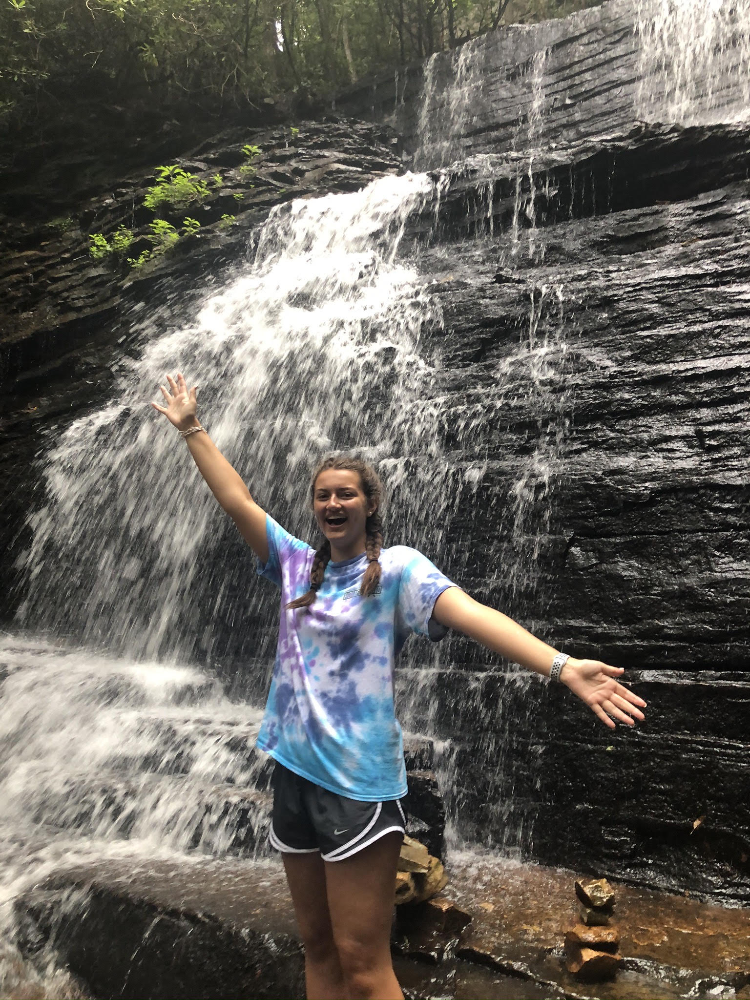

Carly Gross standing in front of a waterfall - photo by Carmen Jones
Personal background: I grew up in Raleigh, NC and moved to Charlotte, NC for college in 2019. I have been playing the flute and piccolo for 9 years and my free time consists of playing Spikeball or board games with friends!
Professional background: My first job was an information technology internship for the town I lived in, then I later worked for a large clothing retailer senior year of high school. I am currently working for an acai bowl place in Plaza Midwood.
Academic background: I am currently studying to earn my Bachelor of Science in Computer Science with a concentration in Data Science and my Bachelor of Arts in Spanish. I hope to get my Masters in the future as well. I am also a TA for a computer science-based liberal studies course.
Information/Technology background: I first started using a computer when my mom bought an HP laptop a long ago. She eventually upgraded to a desktop Mac and I played lots of video games on there. I had a couple different tablets growing up and now have my own laptop for school.
Background in the subject of this course: I started coding my freshman year of high school, but never have really used HTML or CSS, only learned that it existed. I have learned a little bit of Visual Basic, C#, SAS, and a lot of Java.
Primary Computer Platform: MacBook Pro, although I'm saving up for a PC!
Courses I'm taking and reason for each:
ITCS 3160 Database Design and Implementation - part of my data science concentration to learn how to manage data and understand more about data science
ITCS 3162 Introduction to Data Mining - also part of my concentration to learn how to analyze and draw conclusions from datasets
ITIS 3135 Web App Design and Development - computer science elective that I thought would be useful to learn about
ITSC 3155 Software Engineering - required course for the computer science major
SPAN 3241 Spanish Phonetics - elective for Spanish major that I thought would be fun to learn about
Funny story or interesting item about yourself to remember you by: I learned my lesson about peer pressure when in third grade my friends told me to ride down the roof of a slide, then run down the slide. I got scared at the top and fell off then broke my wrist. Lesson learned.
I'd also like to share: I hope to study abroad in Spain one day!